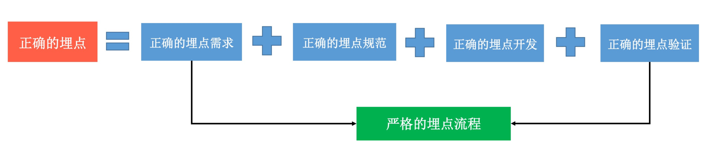
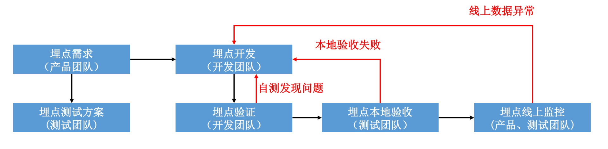
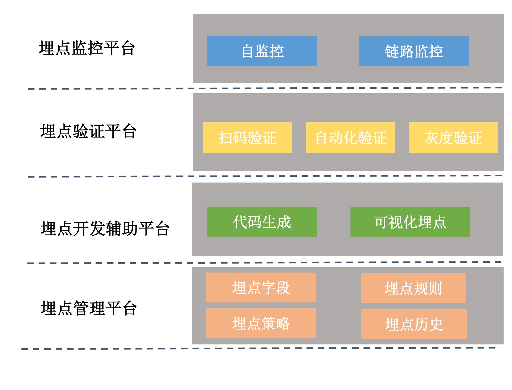
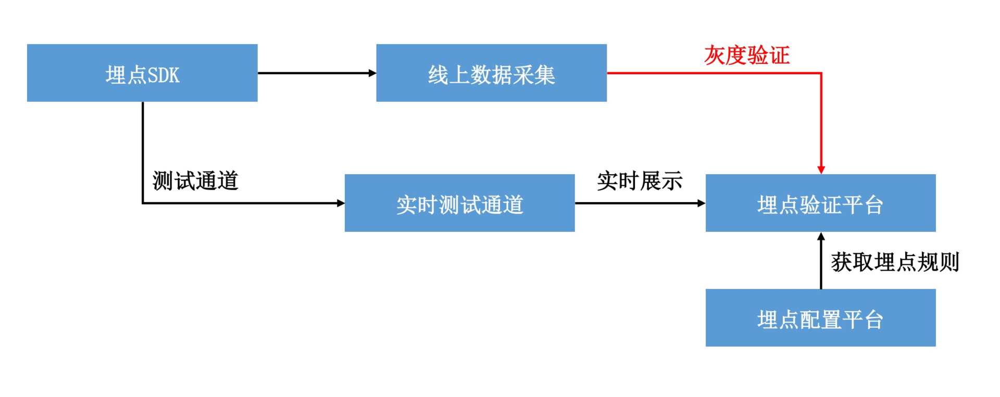
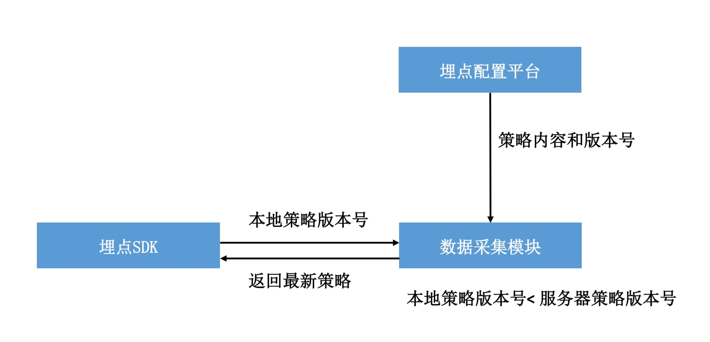
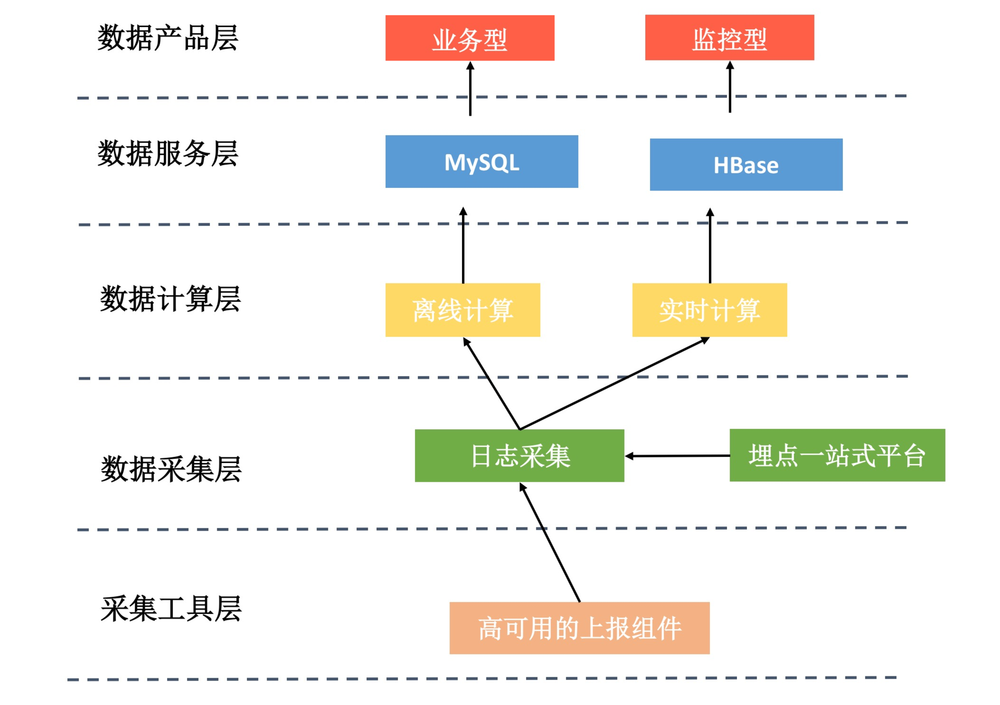
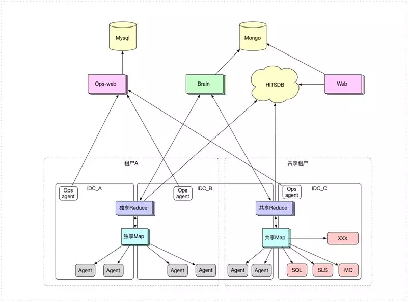
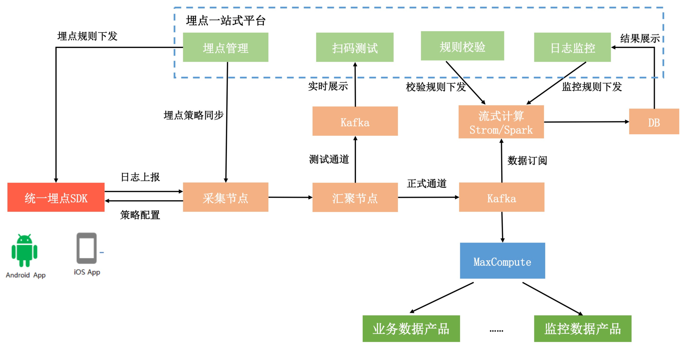

数据是连接产品和用户的桥梁，它反映了用户对产品的使用情况，是我们作出业务决策的重要依据。虽然通过“高可用的上报组件”，可以从源头上保障数据采集的准确性和实时性，但是随着 App 业务迭代的复杂化，经常会出现遗漏埋点、错误埋点、多端埋点不统一等情况，影响了业务数据的稳定性。
我见过很多团队的埋点文档管理得非常不规范，有的还在使用 Excel 来管理埋点文档，经常找不到某些埋点的定义。而随着埋点技术和流程的成熟，我们需要有一整套完整的方案来保证数据的稳定性。
那埋点应该遵循什么规范？如何实现对埋点整个流程的引导和监控？埋点管理、埋点开发、埋点测试验证、埋点数据监控…怎样打造一站式的埋点平台？在埋点平台之上，大数据平台又是什么样的呢？
埋点的基础知识
我们知道，一个业务埋点的上线需要经历需求、开发、测试等多个阶段，会涉及产品、开发和测试多方协作，而对于大型团队来说，可能还要加上专门的数据团队。
对于传统埋点来说，错埋、漏埋这样的问题总会反反复复出现。为了排查和解决数据的准确性问题，参与的各方团队都要耗费大量的精力。特别是如果埋点一旦出现问题，我们还需要依赖 App 发布新版本，可见埋点的修复周期长，而且成本也非常巨大。
那应该如何解决这个问题呢？请先来思考一下，我们应该如何实现一个正确的埋点。

如果想实现一个正确的埋点，必须要满足上面的这四个条件，需要有非常严格的埋点流程管理。因此，你需要做到：
-
统一的埋点规范。应用甚至是整个公司内部，从日志的格式、参数的含义都要有统一的规则。
-
统一的埋点流程。在整个埋点过程，产品、开发、测试和数据团队都要肩负起各自的职责，一起通力协作，通过统一、规范的流程来实现正确的埋点。
通过统一的埋点规范和流程，希望可以减少埋点开发的成本，保障数据的准确性。下面我们一起来看看具体应该如何实践。
1. 统一埋点规范
在打开淘宝的主页时，不知道你有没有注意到 URL 后面会带有一个 SPM 的参数。
https://www.taobao.com/?spm=a21bo.2017.201857.3.5af911d9ycCIDq
这个 SPM 代表什么含义呢？SPM 全称是 Super Position Model，也就是超级位置模型。简单来说，它是阿里内部统一的埋点规范协议，无论 H5 还是 Native 的 Android 和 iOS，都要遵循这套规范。
正如上面的链接一样，SPM 由 A.B.C.D 四段构成，各分段分别代表的含义如下。
A: 站点 / 业务， B: 页面， C: 页面区块， D: 区块内点位 注：a21bo.2017.201857.3.5af911d9ycCIDq 一共有 5 位，这是网站特有的，最后一位分配的是一个随机特征码，只是用来保证每次点击 SPM 值的唯一性。SPM 主要有页面访问、控件点击以及曝光三种类型的事件，它可以用来记录了用户点击或者查看当前页面的具体信息，还可以推算出用户来自上一个页面的哪个位置。基于 SPM 规范，淘宝可以得到用户每个页面 PV、点击率、停留时长、转化率、用户路径等各种维度的指标。
对于埋点规范来说，从公共参数到内部的各个业务参数，我们都需要定义完整的日志格式。目前，SPM 这套规范已经推广到阿里整个集团以及外部的合作伙伴中，这样通过各个部门、各个客户端的规范统一，不仅降低了内部学习和沟通协作的成本，而且对后续的数据存储、校验、分析都会带来极大的便利。
“一千个读者心中有一千个哈姆雷特”，每个公司的情况可能不一定相同，所以也不能保证阿里的埋点规范适合所有的企业。但是无论我们最终决定使用哪种规范，对于公司内部，至少是应用内部来说，埋点规范应该是统一的。
关于 SPM 规范，如果你想了解更多，可以参考《SPM 参数有什么作用》和《阿里巴巴的日志采集分享》。
2. 统一埋点流程
埋点的整个过程涉及产品、开发、测试、数据团队等多个团队，如果内部没有完善的流程规范，非常容易出现“四国大混战”。在出现数据问题的时候，也常常会出现互相推卸责任的情况。
“无规矩不成方圆”，我们需要制定统一的埋点流程，严格规范整个埋点过程的各个步骤以及每个参与者在相应步骤的分工和责任。

-
需求阶段。在需求评审阶段，产品需要列出具体的埋点需求。如果有数据团队的话，产品的埋点需求需要数据团队 review，测试同时也需要根据产品的埋点需求制定出对应的埋点测试方案。这个阶段主要由产品负责，需要保证需求方案和测试方案都是 OK 的。
-
开发阶段。在开发阶段，开发人员根据产品的埋点需求文档，根据具体的埋点规则在客户端中埋点。开发完成后，需要在本地自测通过。这个阶段由开发负责。
-
测试阶段。在测试阶段，测试人员根据产品的埋点需求和规则，通过之前指定的测试方案进行埋点的本地验收。这个阶段由测试负责。
-
灰度发布阶段。在灰度发布阶段，测试人员负责对埋点建立线上的监控，查看线上的数据是否符合埋点需求和规则，产品人员需要关心埋点数据是否是符合预期。这个阶段主要是测试负责，但是产品也同样需要参与。
通过统一埋点流程，我们明确规定了埋点各个阶段的任务与职责，这样可以减少埋点的成本、降低出错的概率。
3. 埋点方式
代码埋点、可视化埋点、声明式埋点、无痕埋点，对于埋点的方式，业界似乎有非常多的流派。在《美团点评前端无痕埋点实践》和《网易 HubbleData 之 Android 无埋点实践》都将埋点方式归为以下三类：
-
代码埋点。在需要埋点的节点调用接口直接上传埋点数据，友盟、百度统计等第三方数据统计服务商大都采用这种方案。
-
可视化埋点。通过可视化工具配置采集节点，在前端自动解析配置并上报埋点数据，从而实现所谓的“无痕埋点”， 代表方案有已经开源的Mixpanel。
-
无痕埋点。它并不是真正不需要埋点，而是自动采集全部事件并上报埋点数据，在后端数据计算时过滤出有用的数据，代表方案有国内的 GrowingIO。
我们平常使用最多的就是“代码埋点”方式，而对于“可视化埋点”和“无痕埋点”，它们都需要实现埋点的自动上报，需要实现事件的自动拦截。
怎么理解呢？你来回想一下，对于 SPM 方案中的页面切换事件，我们可以通过监听 Activity 或者 Fragment 的切换实现。那怎样自动监听控件的点击和曝光事件呢？
以监听点击事件为例，一般有下面几种方法：
-
插桩替换。对于控件的点击，我们可以通过 ASM 全局将 View.onClickListener 中的 onClick 方法覆写成我们自己的 Proxy 实现，在内部添加埋点代码。
-
Hook 替换。通过 Java 反射，从 RootView 开始，递归遍历所有的控件 View 对象，并 Hook 它对应的 OnClickListener 对象，同样将它替换成我们的 Proxy 实现。
-
AccessibilityDelegate 机制。通过 AccessibilityDelegate，我们可以检测到控件点击、选中、滑动、文本变化等状态。借助 AccessibilityDelegate，当控件触发点击行为时，通过具体的 AccessibilityEvent 回调添加埋点代码。
-
dispatchTouchEvent 机制。dispatchTouchEvent 方法是系统点击事件的分发函数，通过重写这些函数，就可以实现对所有点击事件的监听。
大数据平台
虽然我们有了统一的埋点规范和流程，但是整个流程依然是依赖人工手动的。就以埋点需求管理为例，很多团队还在使用 Excel 来管理，随着不断的修改，文档会越来越复杂，这样也不利于对历史进行跟踪。
那怎样将埋点管理、埋点开发、埋点测试验证、埋点数据监控打造成一站式的埋点平台呢？
1. 埋点一站式平台
埋点一站式平台可以实现管理埋点定义的可视化，辅助开发和测试定位埋点相关的问题。并且自动化验证本地和线上的埋点数据，以及自动分析和告警，也可以减少埋点开发和验证的成本，提升数据质量。

如上图所示，它主要由四个子平台组成。
-
埋点管理平台。对应用的整个埋点方案进行统一管理，包括埋点的各个字段的定义和规则，例如对于 QQ 号这个字段来说，要求是纯数字而且非空的。对于 SPM 规范，埋点管理平台也会记录每个页面对应的名称，例如淘宝首页会用 a123 来表示。
-
埋点开发辅助平台。开发辅助平台是为了提升开发埋点的效率，例如我前面说到的可视化埋点。或者通过埋点管理平台的字段和规则，自动生成代码，开发者可以一键导入埋点定义的类，只需要在代码中添加调用即可。
-
埋点验证平台。验证平台非常非常重要，对于开发人员的埋点测试和测试人员的本地验收，我们可以通过扫码或者其他方式，切换成数据的实时上传模式。埋点验证平台会拉取配置平台的埋点定义和规则，将客户端上报的数据进行实时展示和规则校验。比如说某个埋点漏了一个字段、多了一个字段，又或者是违反了预设的规则，例如 QQ 号有字母、数值为空等。
因为手工测试不一定可以覆盖所有的场景，所以我们还需要依赖自动化和灰度验证。它们整体思路还是一致的，只是借助的是线上的非实时通道，每小时或者每日定期输出数据验证的报告。

- 埋点监控平台。监控的目标是保证整个数据链路的健壮性，这里包括对客户端“高可用上报组件”的监控，例如上一期讲到的质量监控和容灾监控。还有对后端数据解析、存储、分析的监控，例如总日志量、日志异常量、日志的丢失量等。
不知道你是否注意到了，埋点管理平台还会对采样策略进行管理。回到专栏上一期我留给你课后作业的问题，当我们服务器采样策略更新的时候，如果不使用推送，怎样保证新的采样策略可以以最快速度在客户端生效呢？

其实非常简单，当用户更改了某个埋点的采样配置时，埋点配置平台会将采样策略版本号自增，然后将最新的策略以及版本号推送到数据采集模块。埋点 SDK 每次上报都会带上自己本地的策略版本号，如果本地的策略版本号小于服务器的版本号，那么数据采集模块会直接把最新的策略在回包中返回。
这种方式保证只要客户端有任意一个埋点上报成功，都可以拿到最新的采样策略。事实上，很多其他的配置都是采用类似的方式更新。
2. 数据产品
埋点的一站式平台，也只是数据平台的一小部分，它负责保证上报数据的准确性。按照我的理解，整个大数据平台的简化架构是下面这个样子的。

-
采集工具层。应用的上报组件负责数据埋点、日志的组装上报，它需要保证数据的准确性和实时性。
-
数据采集层。数据采集层对日志进行清洗、处理，可能还需要和我们的埋点一站式平台进行交互。然后需要根据数据的订阅情况将数据分发到不同的计算模块。
-
数据计算层。计算层主要分为离线计算和实时计算两部分，离线计算从数据接收到结果的产出，一般至少需要一个小时以上。而实时计算可以实现秒级、分钟级的计算，一般只会用于核心业务的监控。而且因为计算量的问题，实时计算一般只会计算 PV，不会计算 UV 结果。
-
数据服务层。无论是离线计算还是实时计算，我们都会把结果存放到数据的服务层，一般都会使用 DB。数据服务层主要是为了屏蔽底层的复杂实现，我们只需要从这里查询最终的计算结果就可以了。
-
数据产品层。数据产品一般分为两类，一类是业务型，一类是监控型。业务型一般用来查看和分析业务数据，比如页面的访问、页面的漏斗模型、页面的流向、用户行为路径分析等。监控型主要用来监控业务数据，例如实时的流量监控、或者是非实时的业务数据监控等。
数据服务层是一个非常好的设计，它让整个公司的人都可以非常简便地实现不同类型的数据产品。我们不需要关心下层复杂的数据采集和计算的实现，只要把数据拿出来，做一个满足自己的报表展示系统就可以了。
对于实时监控，微信的 IDKey、阿里的Sunfire都是非常强大的系统，它们可以实现客户端数据分钟级甚至秒级的实时 PV 监控。

对于中小型公司，可能没有能力搭建自己一整套的大数据平台，这个时候可能需要使用第三方的服务，例如阿里云提供了一套OneData服务。
当然我们也可以搭建一套自己的数据平台，但是对于海量大数据来说，一个稳定、高性能的数据计算层是非常复杂的，我们可以使用外部打包好的数据计算和服务层，例如阿里云的MaxCompute大数据计算服务。接着在数据计算层之上，再来实现符合我们自己需求的数据产品。
下面是一个简单的数据平台整体架构图，你也可以参考大众点评的实现《UAS：大众点评用户行为系统》。

总结
在过去的几年里，大数据也是一个经常被提起的概念。对于大数据，或者说与之配套的大数据平台，我自己的体会主要有两点。
1. 技术变革是为了解决需求。如果淘宝没有面对每天亿级的用户访问数量，没有一次又一次的被卷入数据的黑洞中，也不会有他们对大数据方面所做的各种艰苦努力，技术是为了解决业务场景中的痛点。另一方面看，大数据的确存在门槛，如果在中小型企业可能不一定有这样锻炼的机会。
2. 基础设施建设没有捷径可走。高可用的上报组件、埋点一站式平台以及各种各样的数据产品，这些基础设施的建设需要有足够的耐心，投入足够的人力、物力。为什么要采用这样的规范和流程？为什么架构会这样设计？虽然这些方案可能不是最优的，但也是通过血与泪、通过大量的实践，慢慢演进得来的。
课后作业
你所在的公司，有没有统一的埋点规范和埋点流程？对于数据相关的配套设施建设得怎么样？在数据保障方面遇到了哪些问题？欢迎留言跟我和其他同学一起讨论。
在数据平台的建设上面，国际的 Facebook、国内的阿里都是做得非常不错的公司，我推荐你看看阿里数据专家们写的一本书《大数据之路 阿里巴巴大数据实践》。
COMMUNITY NOTES
读者评论
不要用level来衡量这门课，这里面每个知识点都可以继续的挖掘和深入。绍文老师更多的是带你进入很深层次的学习，更多的需要自己的不断学习和思考。至于level完全和你的学习深度有关。
想问一下这个课程的难度，相当于阿里p7的水平么
目前在一家游戏直播公司，负责就是移动端的埋点SDK以及数据准确性保证的工作，在没听到这课程之前，就在推进埋点规范，验证这方面的建设。错埋漏埋，埋的不规范让我头疼的不行